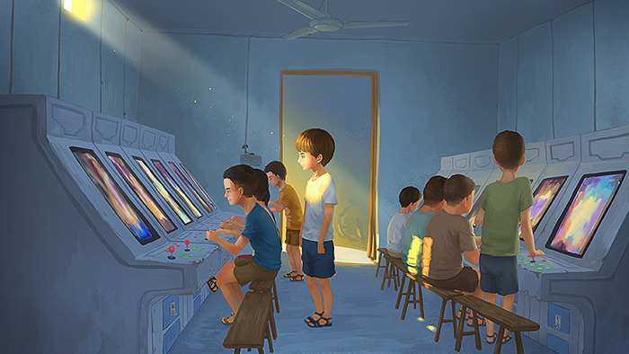
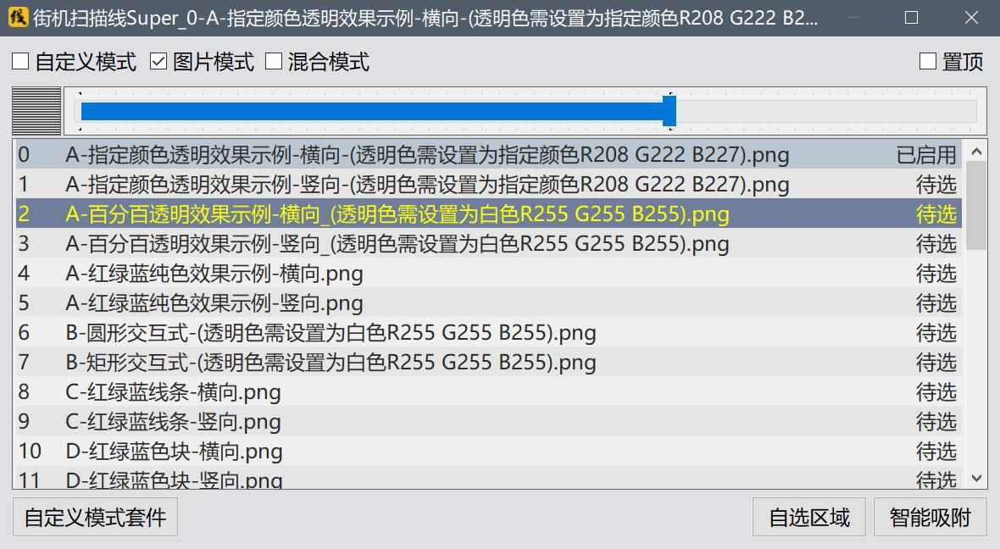
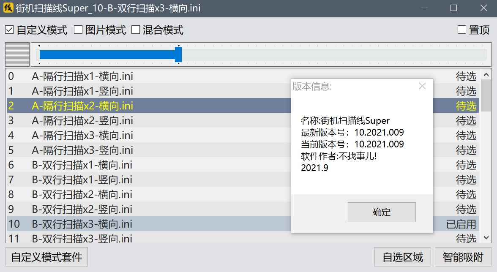
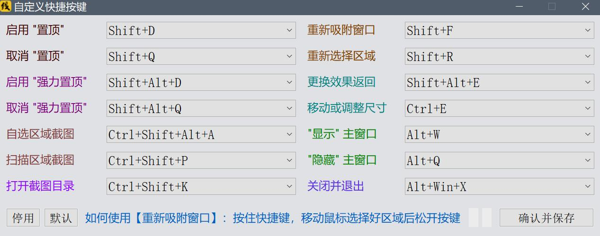
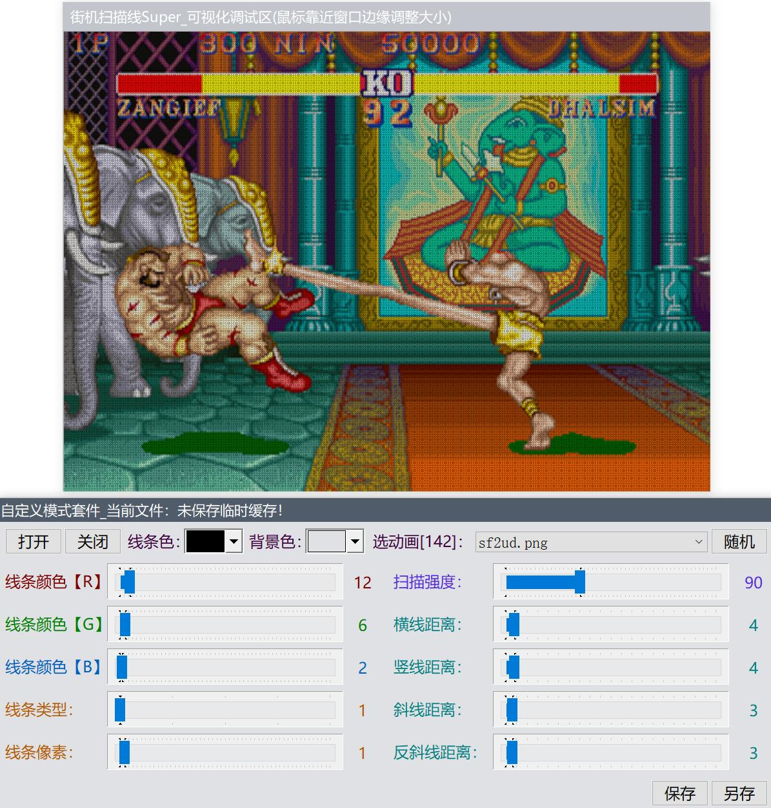

新动态：电玩街机[全新机台，对比旧版资源使用率更低，声音模拟更完善]已上线[浏览器跨平台游玩，支持电脑端、手机端、平板、电视盒子等平台设备...]支持自定义按键，支持手柄、键盘等外设输入！
站点公告：本站为非盈利性质个人站点，必然偶尔会发生无法访问的情况，介时还请多多理解，尽量第一时间恢复访问！
作者：感谢所有支持过本站的朋友们！愿天黑有灯，下雨有伞，平安幸福度一生！
无事阁原创软件_作者：不找事儿
★ 本站网址 ★ http://www.buzhaoshi.top/ ★ 或 ★ http://buzhaoshi.top/ ★
【New】街机扫描线Super_正式版(2021009)_把你的街机荧屏搬回家-模拟街机荧屏，模拟老旧电视CRT扫描线效果
动态：新版本的 街机扫描线Super_正式版(2021009) 已发布！在此，感谢支持过街机扫描线的朋友们，愿笑口常开！^^

软件简介：使用街机扫描线会有一种身临街机厅的怀旧感觉，因为它可以模仿出街机荧屏的效果，可以对马赛克进行一些优化，使得街机游戏的画面看起来更加清晰唯美。软件自带多种扫描效果并配备截图功能，如果觉得不满意还可以通过【自定义模式套件】来配置出任意一种线性扫描效果，理论上任何程序都可以使用它来进行扫描，软件的工作原理是首先绘制出扫描线条，然后再覆盖到程序窗口的上层来达到扫描的效果。有很多网络视频并不是很清晰，用它来观看，效果也会有一定的提升。
软件特色：智能吸附窗口，与某些截图软件的吸附功能一样，使用起来非常方便，进入吸附状态时多种颜色随机选取，美观大方。支持自定义线性扫描、自定义视觉效果扫描(图片模式)，混合模式(图片效果与线条效果的扫描同时进行)，理论上此软件的视觉效果绝对可以多的不像话。
版权声明：在不修改软件内容的前提下，可以随意传播与使用本软件。
如果你喜欢这款软件，可以通过软件托盘菜单的“支持作者”来请我喝瓶啤酒，多份支持，多分坚持！
注：软件各功能详情请参考站内的【街机扫描线Super帮助文档】
获得最新版本：由于本站点已迁移，固原始更新地址均已失效，可到 【http://www.buzhaoshi.top】 或 【http://buzhaoshi.top】 作者主页查看各软件的更新动态
【最新_街机扫描线Super_正式版_2021009】附件下载： arcscanline2021009.zip
由于更新内容较多，请删除【Config】文件夹，或解压到新的目录
更新日志：2021009对比2021003版本
0.在主窗口【扫描强度调节】的左边增加了扫描强度的可视化
1.菜单中添加【自定义快捷键】功能，全局生效，共支持14种功能
每种功能都有从双键到四键共计300多种快捷组合按键供玩家随意选择
有了快捷按键的加持，使得【街机扫描线Super】更加人性化
2.菜单中添加【强力置顶】功能，该功能可支持但不限于部分应用的全屏化扫描
3.菜单中添加【隐藏主窗口】与【显示主窗口】功能，操作更方便
4.重新制作了【自定义模式套件】，现在支持动态背景的显示，调试过程中可以大幅度模拟在游戏中的扫描效果，动态背景的图片为【GIF】格式，支持自定义背景图，只需要将当作背景的【GIF】多帧或单帧图片【同时也支持BMP,JPG,PNG格式】放到根目录的【BG】文件夹内，在启动【自定义模式套件】后即可通过"选动画"来选择需要的模拟背景，同样，在【自定义模式】的效果列表中【右键单击任意效果文件】选择第一项【预览效果或配置】即可方便的预览并模拟该配置在游戏中的显示效果，当"选动画"为"不显示当前背景图"时，"背景色"即刻生效
【BG】文件夹内的（必看说明）文件内容：
该文件夹的【任何图片或文件】都可随意删除，不会影响程序的运行
可以放入后缀为【GIF】的多帧动态图片，建议使用【Adobe Premiere】导出25帧标准的GIF动画，不会出错，此文件夹内的示例图片【(动图飞机)战国之刃】和【(动图射击)合金弹头】都是使用【Adobe Premiere】导出的标准25帧GIF动画，50帧的动画会播放的比较慢，12.5帧的动画就真的是动画了…………
也可以放入后缀为【jpg】【png】【bmp】【gif】的单帧静态图片，根目录为四种单帧图片和两个多帧GIF图片示例【IMG】文件夹内共有209张PNG图片，匀为街机的原始分辨率
支持搜索子目录，把需要用到的图片放在这里就可以，列表排序会优先显示根目录【BG】中的文件名称，然后是子目录
程序默认支持搜索并添加最多1000张图片文件【包括以上全部格式】，如果不够用，可以通过修改程序根目录【Config】文件夹下的【Config.ini】文件中的【Config】节点下的【SZ=xxxx】（xxxx为数值），修改xxxx即可，数值范围：0-随意数值无上限，0为不显示背景图
补充说明：如果只需要使用几张图片的话，完全可已按图片数量来设置这个数值，数值越小，占用的内存相对也会越小，现在电脑的内存动不动就16G、32G的内存了，虽然设置到【10000】也未必能占用到【10M】的内存，可是对于程序控来说，能省则省嘛，合理利用有限的资源，才是重中之重！
5.增加了4种【自定义模式】的扫描效果并更正了【横向砖墙扫描效果】和【竖向砖墙扫描效果】扫描效果的错误，现在是正确的配置与显示效果了
6.增加了35张【图片模式】的样张图片，其中包括21张纯色图片，供需要时使用
7.调整了多个附属窗口启动后的显示位置
8.优化了【自选区域提示】的显示逻辑，优化了效果列表与菜单标题的文字显示
9.优化了【检测版本更新】的相关提示信息，在检测更新时如果无法链接服务器会有相应提示
软件界面预览：


新功能【自定义快捷键】界面预览：

重新制作的【自定义模式套件】界面预览：

注意(补充)：如果操作系统为windows10，建议将 "DPI缩放" 设置一下，这样可以避免因程序被缩放而造成文字不清晰和某些扫描效果不正确的问题，设置方法可参考下图：

★ 本站网址 ★ http://www.buzhaoshi.top/ ★ 或 ★ http://buzhaoshi.top/ ★